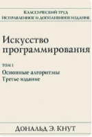
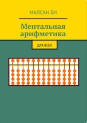

В книге представлен широкий спектр рассматриваемых тем:
исчерпывающее толкование структур данных и алгоритмов сортировки,
поиска, обработки графов и строк, включая пятьдесят алгоритмов
(код на сайте), которые должен знать каждый программист.
Описываются новые реализации алгоритмов на Java, написанные
в ясном модульном стиле, при котором весь код доступен читателю
и полностью готов к использованию.
Приобрести

Искусство программирования
Авторы: Дональд Кнут
Область: программирование
Фундаментальная монография известного американского математика и
специалиста в области компьютерных наук Дональда Кнута, посвященная
рассмотрению и анализу важнейших алгоритмов, используемых в
информатике.
Приобрести
Поток: Психология оптимального переживания
Авторы: Михай Чиксентмихайи
Область: психология
В своей культовой книге выдающийся ученый Михай Чиксентмихайи
представляет совершенно новый подход к теме счастья.
Счастье для него сродни вдохновению, а состояние, когда
человек полностью поглощен интересным делом, в котором максимально
реализует свой потенциал, Чиксентмихайи называет потоком. Автор
анализирует это плодотворное состояние на примере представителей
самых разных профессий и обнаруживает, что эмоциональный подъем,
который испытывают художники, артисты, музыканты, доступен в любом
деле. Более того, к нему надо стремиться – и не только в
целенаправленной деятельности, но и в отношениях, в дружбе, в
любви. На вопрос, как этому научиться, и отвечает книга.
Приобрести

Ментальная арифметика. Для всех
Авторы: Малсан Би
Область: математика
Данная книга создана для родителей, которые желают помочь своим
детям в освоении принципов ментальной арифметики, предпринимателей,
планирующих открытие курсов по ментальной арифметике, людей,
которые просто желают улучшить работу своего мозга и для всех
тех, кому интересна ментальная арифметика, но они не знают,
с чего начать.
Приобрести